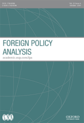

收录于合集
作品简介
【作者】 Thorsten Wojczewski是伦敦国王学院印度研究中心的Leverhulme职业研究员。他的研究兴趣为对外政策分析、民粹主义、世界秩序等。
【编译】 王俞欢（国政学人编译员，中国人民大学新闻学院）
【校对】 冯毓婧
【审核】 王国欣
【排版】 马璐
【来源】 Wojczewski, T. (2019,August 23). Trump, Populism, and American Foreign Policy. Foreign Policy Analysis.
期刊介绍

《对外政策分析》（Foreign Policy Analysis）杂志是由牛津大学出版社代表国际研究协会出版的季刊。该期刊旨在以比较或具体案例研究的方式研究对外政策决策的过程、效果、原因或结果，2018年影响因子为1.012。
特朗普、民粹主义和美国对外政策
Trump, Populism, and American Foreign Policy
Thorsten Wojczewski
内容提要
本文运用民粹主义话语分析的方法，结合后结构主义国际关系理论和拉康主义精神分析理论，考察了 对外政策与民粹主义身份建构之间的概念联系 ，以及 民粹主义在对外政策领域中展现出的意识形态力量 。本文把民粹主义和对外政策概念化，使之成为联系“自我”和“他者”、建构集体身份认同的独特话语。本文通过对特朗普领导下的美国案例研究，阐明了 “ 他者化 ” 的不同模式 ，说明了特朗普的话语将对外政策用于（再）生产民粹—民族主义选举联盟的方式。与将民粹主义作为一种歪曲现实的意识形态的观念不同，本文认为，话语遮盖了 社会现实的话语建构， 从而增强了意识形态吸引力，从而 满足了主体对拥有完整和可靠身份的渴望 。
文章导读
唐纳德·特朗普在美国的胜选可能是近来全球民粹主义热潮的最明显体现，他宣称要修复一个“操控了美国人民的系统”——一个由腐败精英操纵的系统，这些“精英”将美国人民的“需求”“屈居于外国公民之后”，从而“出卖了自己的国家”。对外政策问题在特朗普竞选中的显著作用表明，民粹主义不仅限于国内政治。然而，有关民粹主义和国际关系的文献很少关注民粹主义的国际层面，也没有分析民粹主义者执行对外政策的方式。
本文认为“人民”观念是对外政策话语建构和再现的主体，讨论了对外政策话语建构民粹主义的不同方式。通过不同类型的“他者化”，特朗普的话语用对外政策建构人民“既是国民又是弱者”这一集体身份，从而 将民族主义和民粹主义情绪结合起来 ，使特朗普能够宣称自己是人民“真正的”代表。
本文 第一部分概述了后结构主义理论的主要特征，对民粹主义话语理论的理解，及如何对民粹主义及其与民族主义和对外政策的关系进行概念化。 第二部分讨论了民粹主义话语的意识形态吸引力，以及它们如何通过建构独特的幻想来掩盖（被视为）社会现实的不完整性，从而为自我提供整体性和同一性的幻觉。第三部分简述了研究方法。第四部分将这种分析框架应用于美国，展示了特朗普的话语如何用对外政策来（重新）制造人民的集体身份认同。
一、 联系“自我”与“他者”：民粹主义、民族主义和对外政策的话语
通过在不同元素间建立联系，话语建构了主体、客体和实践的意义，提供了一种理解社会现实的特殊方式。民粹主义的话语围绕着“人民”这一能指（Signifier）（译注：能指，意为语言文字的声音和形象），将不同的社会行为体团结在共同的政治活动中。拉克劳认为， “ 人民 ” 的概念是 “ 空能指 ” （ empty signifier ）。空能指没有（清晰的）所指（ signified ），也就是说，这个词可以具有各种各样、甚至是矛盾的含义。 在民粹主义的话语中，建制派是一个被共同否定的对象，不同的未满足需求可以被等同地表述，因为建制派阻碍了这些需求的实现，所以成为建构大众身份的共同敌人。
话语方法为区分民粹主义和民族主义提供了分析工具。通过 与精英的上 / 下对抗 ，民粹主义把“人民”构造为“弱者”（underdog），“无能为力的”（powerless）或“沉默的大多数”。民族主义则通过 内 / 外的方式建构集体身份 ，把民族共同体和外部团体区分开（例如其他民族或者移民）。民粹主义和民族主义将自我与他者区分开，类似于后结构主义IR理论将对外政策概念化为一种话语，即与（危险的）他者区分开来建构和再现自我（指国家）。
对外政策的话语不仅通过划定内外界限来构建国家和民族认同，也是（重新）生产民粹主义 “ 人民 ” 概念的关键。 “人民”和“精英”被置于对外政策领域不同种类的对立关系中，包含了从纯粹的上/下对立到内/外和上/下对立两者结合,而这种结合通常表现为“人民”与跨国精英的对立。
二、 民粹主义和意识形态：民粹主义话语的效力
当代研究中，把民粹主义视为意识形态已司空见惯，然而，究竟是什么使民粹主义成为意识形态却还不清楚。一些学者把它当作一种理想的信仰体系，用以区分理念和客观世界。而从话语理论的角度来看，客观现实本身就是一种意识形态的东西，因为它总是依赖话语这一中介。拉克劳在拉康主义理论的基础上，用“缺失”的概念（notion of lack）来强调，身份本质上是不完整的，这激发了人们对完整性的渴望，并将渴望导向了一个经验客体，承诺重塑整体性来应对“危机”。这是通过制造幻想实现的，幻想在话语中描绘了一种行动路径，满足主体对整体性、确定性和安全感的渴望。 民粹主义话语将这种渴望引导到 “ 人民 ” 这一客体上，有望重新建立社会客观性和社会的统一与和谐。
“人民”与“精英”的对立能唤起特定的情感，触发恐惧、焦虑、愤怒、无能或受害等感觉，将他人视为对自身的生存威胁。用这种二元框架来将社会、政治和经济简化和个性化，能减少复杂性、歧义和不确定性。
三、研究方法
本文运用了话语分析的研究方法，分析的文本包括特朗普的竞选演讲、报纸采访、推文、总统选举电视辩论，与对外政策有关的声明等。
第一步是寻找话语的节点（nodal points），从而找到构成文本数据的主要能指。“人民”和“美国”就是这种主要能指，它们在大多数文本中屡见不鲜。然后，找到与之相关的术语（例如“被遗忘的男人和女人”）之后，再分析这些词的上下文，解释它们的含义。后结构主义的话语分析方法认为意义的建构是与差异有关的。因此，这里的 上下文 指的是文本中能指的位置，以及跨文本的不同概念模式。文本分析的关键维度是：（1）述谓（译注：即句子的抽象语义内容，一个句子可以有很多种表达方式，但有一个核心不变的语义）和共现（predication and co- occurrences）：识别文本中主要能指的特征，以及有这些能指的句子中含有的其他概念；（2）主要内容定位：确定分类方式，将主要能指和其他相关概念划分为不同类别和等级（例如，好/坏，内/外或和平/危险）；（3）叙事：识别文本的叙事结构，这些叙事结构将行为体、过程和事件链接成清晰、简单和连贯的故事线。
** 四、 特朗普的话语和对外政策：“让美国再次伟大”**
1 、错位与危机
特朗普话语是对错位事件（dislocatory events）的反应。错位事件超出了话语表达的范围，占主导地位的话语不能完全表示或解释它们。 错位破坏了先前建立的身份和意义系统，使主体面临本体的缺失，导致 “ 自我 ” 处于一种危机状态，常常带来社会不满。 与其他民粹主义者一样，特朗普也抓住了错位引起的恐惧和焦虑，特别是：
（1）（新自由主义）全球化的错位破坏了有关时空、存在和归属的既定观念，造成了身体、本体和经济上的不安全感，削弱国家主权和政治责任感。
（2）中国成为世界第二大经济体并抵制政治自由化，而美国则相对衰落，面临收入增长停滞和金融经济危机。
（3）巴拉克·奥巴马成为美国第一位非白人总统，使代表美国身份的“白人，欧洲和基督教”标签错位。
特朗普强调了上述错位事件，他 用话语来唤起生存危机、社会经济焦虑和不满，以及美国人民与建制派之间的脱节 。
2 、恢复美国人民的主权：空能指
特朗普的话语通过幻想的叙事吸引选民，掩盖美国人主体性的不完整，改善目前的悲惨局面并恢复社会秩序，为“自我”提供假想的本质，以确立自己在世界上的位置。遵循民粹主义的逻辑，这种主体性首先用空能指“人民”来表示，象征一系列社会不满——“当我们不再把美国人民放在首要地位时，我们的国家就迷失了。”特朗普承诺“我们将使美国再次强大，我们将使美国再次安全，我们将使美国再次伟大”。
这些话语营造出了一个理想的现实：团结、和谐、能自我统治的强大人民。当 “ 美国人民再次被放在首要地位 ” 时，美国将如他承诺的一样，恢复其财富、安全、力量、统一和伟大，重新确立其作为全球领先大国的地位。
3 、建立 “ 人民 ” 的集体身份：对抗与对外政策
特朗普的话语提供了一种整体性和伟大感，而美国缺乏“整体”和“伟大”错在“他者”。这 让 “ 自我 ” 相信一旦 “ 他者 ” 被克服， “ 自我 ” 就不再缺乏。
为了建立人民的集体身份，特朗普的话语讲述了一系列令人沮丧的社会现状，并将其归咎于建制派和外国的“他者”。 “ 他者化 ” 的过程体现了民粹主义和民族主义逻辑的相互作用，沿着上 / 下对立和内 / 外对抗的路线构建了两个重叠的集体身份 ：人民是弱者也是国民（nation）。
最典型的是特朗普对希拉里·克林顿的抨击。通过将希拉里当作替罪羊，特朗普的话语构造了一个幻想对象，将缺失和不安全转移到主体之外，简化复杂的社会、政治和经济挑战，将它们归咎到“他者”身上：是希拉里阻碍了所有美国人民的生活， 一旦消除了这个 “ 障碍 ” ，就可以满足主体对完整和安全身份的渴望。
特朗普的话语还在美国建制派和外国“他者”之间建立联系，从而 将民粹主义的上 / 下与民族主义的内 / 外对立交织在一起 。他指责建制派未能“保卫和守护美国边界”和保护美国人民的经济利益，还与外国“他者”勾结。
对外来者和外部威胁的敌意是一种民族主义的逻辑，但也具有民粹主义色彩：特朗普话语中的“全球主义”描绘了一个简化的世界政治图像，表明美国建制派把跨国公司和外国人的利益置于美国人的福祉之上。 **特朗普的话语在民族和外来群体之间划定政治界限，减轻了 **“ 人民 ” 一词 “ 空虚 ” 的内涵。通过描述危险的外部环境，特朗普的话语不仅将美国的内部问题外部化了，同时也明晰了 “ 美国性 ” 的含义。 就“他者化”两种模式的频率和强度而言，民族主义的内/外和民粹主义的上/下对抗在特朗普话语中扮演着同等重要的角色。
4 、特朗普的总统任期与美国对外政策
与民族主义的身份相比，“人民是弱者”的民粹主义概念是一种更不稳定的身份，需要永久的“他者”来对抗。
特朗普的话语把美国的对外政策作为重新生产共同身份的摇篮，并把特朗普打造成无所不能的决策者和强硬的领导人形象，因为他把 “ 美国人民放在首位 ” 。 特朗普的话语结合了民粹主义和民族主义的逻辑，加上人民和精英的对抗，这形成了美国和世界其他地区之间的对抗。特朗普话语的持续吸引力在于两种“他者化”的巧妙结合。
通过制造恐惧和有象征意义的政治行为，以及挑衅和煽动性的言论，特朗普试图维护半稳定的政治动员状态，从而制定政治议程。 他煽动支持者的情绪，让他们觉得自己在世界舞台上代表美国人民，还能恢复美国的伟大。 这导致了 美国在强硬和安抚之间摇摆不定的对外政策 ，特朗普对朝鲜和俄罗斯的态度都遵循了这种模式。
尽管特朗普的话语从各个方面表明美国人民受到威胁，但他也表明应对这些威胁并非难以对付。例如，特朗普认为，与中国的贸易战可以调整美中经济关系，消除美国与中国的贸易失衡。
然而，在维持大众身份认同与对外政策之间的联系上，特朗普的话语遇到了困难。由于民众身份是通过政策来（重新）生产的，因此 保证特朗普与建制派对外政策的区别是维持其政治计划的前提。 当面临超出特朗普话语范围的事件时，它就有可能错位，失去对主体的“把握”，破坏自我和他者之间的关系。尽管特朗普履行了他的几项竞选承诺，但也没有使美国走上再次强大之路，或者使美国的盟国和竞争对手顺服。这表明 特朗普的幻想叙事 “ 让美国再次伟大 ” 有深层矛盾 —— 该叙事将美国人民视为弱者，将美国视为一个迅速衰落的国家，但同时暗示美国将在特朗普的领导下重新崛起为无所不能的超级大国，能将其意志强加给他人和定义国际关系规则。 特朗普的对外政策还努力重现“美国主义”和“全球主义”之间的对立。尽管他强调了“腐败的”全球化对美国工人的负面影响，但他的政策并未反对新自由主义全球化本身。
五、 结 论
本文以民粹主义的话语理论为基础，结合后结构主义IR和拉康的精神分析理论，考察了特朗普的话语如何将对外政策作为（再）生产人民集体认同的工具。特朗普将不寻常的社会需求置于对两个“他者”的共同反对之上：“全球主义”的建制派和外国“他者”。通过不同的话语策略分析，可以对民粹主义与对外政策关系提出一般性观点—— 对外政策可以重新建构人民 / 精英这一对立关系 。
文章探讨了民粹主义和民族主义观念通过对外政策的话语（再）生产和融合的方式。 特朗普对外政策中的民粹主义元素，体现在美国对国家利益的定义，以及外交决策的个性化、简化和情感化倾向上。通过质疑自由主义—国际主义的对外政策，指责建制派将“特殊利益”置于人民利益之上，特朗普的话语暗示了“人民”与“建制派”的脱节，使他成为唯一能解决这些问题的领导人。此外， 特朗普话语中的反全球主义，既有民族主义逻辑又有民粹主义逻辑。
最后，话语分析能帮助意识形态层面的民粹主义重新概念化。特朗普话语的意识形态元素体现在，他建构了一种幻想，能掩盖他要代表的纯粹的“人民”话语结构，并承诺如果认同特朗普，人们将拥有完整和可靠的身份。
_ ** _ ** _ ** _ 本文由国政学人独家编译推荐**__
扫下方二维码查看往期精彩
【新刊速递】第01期 | Review of International Studies Vol.45, No.4, 2019
【新刊速递】第02期 | International Relations Vol.33, No.3, 2019
【新刊速递】第03期 | International Organization Vol.73, No.3, 2019
分类导览 1

分类导览 2


点“在看”给我一朵小黄花